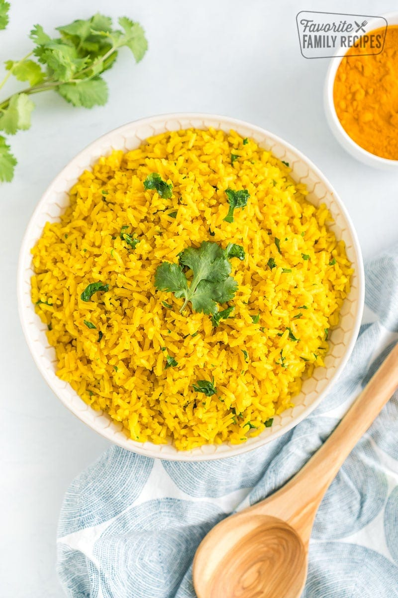

Yellow Rice

Description
Recipie for yellow rice. Nutritious side meal to be eaten with a protein of choice
Ingredients
1/2 an onion
1/2 a red bell pepper
Basmati rice
Tumeric
Dried lime
Cardamom seeds
Bay leaves
Chicken stock
Steps
Rice
Dice onion and bell pepper
Place olive oil in pot and heat on medium-high
Put onion and bell pepper in after couple minutes of pot heating
Fill kettle and boil
Stir pot for a few minutes until soft and add salt & pepper
Sieve basmati rice and rinse while intermittently stirring pot
Add a few cardamom seeds, 2 dried limes and 2 bay leaves to pot, stirring
Add teaspoon of tumeric to pot while stirring
Add rice to pot and toast for a few minutes
Dissolve a couple of chicken stock cubes in the boiling water in a bowl
Add stock to rice and turn heat to max while stirring
Once water has dried up, turn off heat
Serving
Serve with a main protein, chicken thighs are recommended
Optionally, top with a yoghurt sauce
Enjoy!